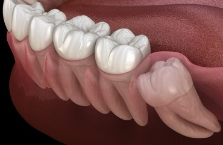

一般歯科 GENERAL
一般歯科とは、虫歯の治療や歯周病の治療、義歯の調整、作製などを主とする診療です。
通常、保険診療の範囲内で治療を行います。
■ 虫歯
食べ物や飲み物に含まれる糖分を餌としてお口の中の細菌（虫歯菌）が増殖し歯の表面にプラーク（歯垢）を作ります。それと同時に細菌は酸も作ります。
虫歯はこの酸によって歯の表面（エナメル質）が溶かされることにより起こります。
虫歯は進行状態によりC0～C4に分けられます。
C0
歯のエナメル質の表面が溶かされ始めた状態で、目に見えない位の小さな穴ができるため白く濁ったように見えます。
適切な歯磨きや食生活で自然に回復するのでフッ素塗布を行い様子をみます。
C1
C0からさらにエナメル質が溶けて小さな穴ができた状態です。
虫歯の部分を取ってレジンで埋める治療をお勧めしますが、年齢や虫歯の場所によっては様子をみます。
C2
エナメル質を越えてその下の象牙質に及んだ状態です。
冷たいものや甘いものでしみたりすることがあります。
1～2回の治療で済むので早期の治療をお勧めします。
C3
象牙質の下の神経のところまで及んだ状態です。
歯の神経を取る治療になります。虫歯で歯があまり残っていないことが多く、かぶせもので修復する必要があるため、治療回数も4～7回と多くなります。
C4
虫歯が歯の根の中まで及んだ状態です。
治療が不可能なため抜歯となります。
■ コンポジットレジン充填
虫歯を除去した後にコンポジットレジン（プラスチック）を詰める治療です。（保険適応）
治療前
治療後
＊虫歯が大きかったり、噛む力が強い場合、割れたり取れたりする可能性があります。
■ 麻酔
「なるべく痛くないように麻酔の注射をする」
これは私が常に心掛けていることです。痛くないようにすることで患者さまの恐怖心を和らげたり、少しでも苦痛を減らすことができればと思いながら治療に臨んでいます。その甲斐あってか、「本当に注射をしたんですか？」とか「痛くない麻酔を使ってるんですか？」とよく言われます。麻酔には特別な器具は使いません。針を刺す場所を見極めるのと、刺し方に痛くしないコツがあります。
ただし、まれにうまくいかないこともあります。麻酔の効きにくい部位や非常に強い痛みのある歯には麻酔が効かないことがあり、追加の麻酔に痛みがあったり治療を中断することもあります。
この場合もなるべく痛くないように配慮はしております。
■ 歯のヤニとり
パウダーを吹き付け、その研摩作用でステイン（ヤニ）をとります。
定期的に繰り返すことで歯の表面がつるつるになり、ステインが付きにくくなります。
歯石取りなどの歯周病治療の一環として行います。
治療前
治療後
■ 親知らず
親知らずは8番目の歯で、この歯自体が痛むことは少なく、親知らずが生えるためのスペースがないために起こる歯ぐきの痛みや、 その前に生えている7番目の歯が痛むことで問題となります。歯並びに悪い影響を及ぼすこともあります。
処置としては、問題がなければそのまま残すことになります。虫歯があれば虫歯の治療を行います。痛みがあったり、親知らずがあることで問題となる場合は抜歯の選択となります。
抜歯の困難が予想されたり、あごの神経に近く危険であると判断した場合は口腔外科をご紹介しています。当クリニックでは、連携している市立東大阪医療センターの口腔外科をご紹介することが多いです。
■ レーザー治療
当クリニックでは、CO2レーザーを治療に活用しています。
口内炎はレーザーで焼いて疑似のかさぶたをつくることで痛みが弱くなり治りも早くなります。親知らずの歯ぐきの痛みや顎関節症の痛みや口が空きにくくなったときにも有効です。外科的には上唇小帯や頬小の帯切除、歯肉切除で使います。また、抜歯後の止血処置や外科処置後の殺菌消毒、歯ぐきの腫れた痛みを和らげる目的でよく使っています。